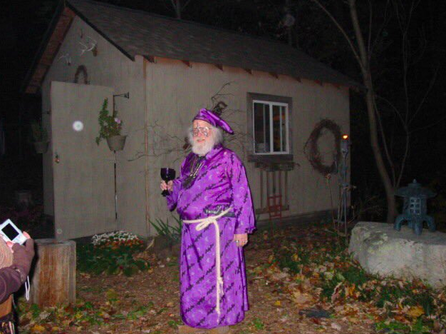
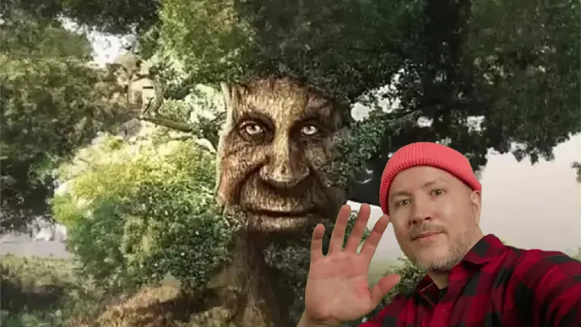

Las Locuras de Nuestras Vacaciones con Weblink
Por Weblink Jr. Jr.
¿Alguna vez planeaste unas emocionantes vacaciones (Expedición de reconocimiento según Weblink) al plano feérico y terminaste en Wyoming, Estados Unidos? Nosotros también. Nuestras vacaciones con Weblink fueron una montaña rusa de aventuras, giros inesperados, peligro y una guerra absoluta y violenta con los vientos hostiles de la región. Pero suficiente introducción. ¡Déjanos contarte cómo nos fue!
Todo comenzó con grandes expectativas. Nuestra misión: viajar al plano feérico, un lugar místico lleno de criaturas mágicas. Sin embargo, en algún momento del camino, nos perdimos y terminamos en medio de Wyoming, Estados Unidos, rodeados por los icónicos vientos hostiles por los que este estado es famoso.
En Wyoming, no solo tuvimos que lidiar con la sorpresa de estar en el lugar equivocado, sino que también enfrentamos una batalla épica contra los vientos más desafiantes que jamás hayamos experimentado. Los sombreros volaron, los cabellos se alborotaron, Weblink Jr. desapareció y no podíamos dar un paso sin sentir que éramos arrastrados por la fuerza de la naturaleza.
Para aliviar nuestras penas después de la travesía en Wyoming, Weblink propuso volver a la cabaña que alquiló (en algún momento) para tomar algo y relajarnos, pero el buen mago terminó tomando más de lo que debería. Sus asistentes intentaron mantenerlo bajo control, pero se olvidaron de que Weblink puede teletransportarse.
Después del incidente en la cabaña, finalmente logramos llegar al plano feérico. Visitamos al gran "Sabio Árbol Antiguo," una entidad mágica que guarda los secretos del bosque. El árbol nos recibió con enigmas, profecías y algunos consejos incomprensibles, pero fue una experiencia fascinante.
Mientras explorábamos el plano feérico, Weblink se separó del grupo y se perdió entre los árboles. Pasamos horas intentando encontrarlo sin éxito. Si alguien lo ve por ahí, por favor avísenos...
En resumen, nuestras vacaciones con Weblink fueron una locura de principio a fin. ¿Quién hubiera pensado que nuestras vacaciones se convertirían en una historia digna de una campaña de D&D?